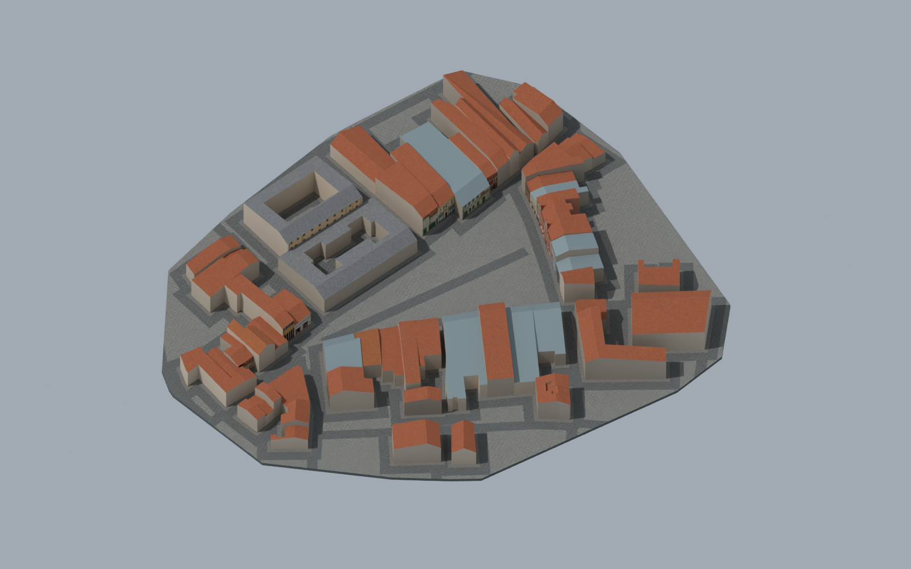

House 1
Unfinished / inherited coarse envelopeFaçade identity, historical period and source registration require individual review.
Historical Most · working version 4
The historical catalogue contains 33 houses. The inherited assembly places 32 of them and 25 surrounding houses.
Complete historical, interactive browser and mobile QA were not completed before publication. This is an explicitly published work in progress.
Earlier preparation and catalogue → · Earlier 3D version v3 →

40 of 47 embedded images have higher native dimensions than the old web model. House 57: 1024 × 683 → 1536 × 1024; house 60: 785 × 1024 → 1098 × 1432. No upscaling or invented new historical detail.
The current database area contains 9 structures rather than the 33 entries of the historic project catalogue. Matching house numbers alone does not establish identity. A read-only search found 309 plan attachments across 11 structure records; sheets may be repeated. This is a partial search, not a complete reading and registration of every sheet.
Façade identity, historical period and source registration require individual review.
Façade identity, historical period and source registration require individual review.
Façade identity, historical period and source registration require individual review.
Façade identity, historical period and source registration require individual review.
Façade identity, historical period and source registration require individual review.
 cp_5_003.jpg1920 × 1080 · full file ↗
cp_5_003.jpg1920 × 1080 · full file ↗ i-namesti_5_crop.png651 × 606 · full file ↗
i-namesti_5_crop.png651 × 606 · full file ↗ cp_5_002.jpg1920 × 1080 · full file ↗
cp_5_002.jpg1920 × 1080 · full file ↗ cp_5_005.jpg1920 × 1080 · full file ↗
cp_5_005.jpg1920 × 1080 · full file ↗ cp_5_006.jpg1920 × 1080 · full file ↗
cp_5_006.jpg1920 × 1080 · full file ↗ cp_5.jpg1920 × 1080 · full file ↗
cp_5.jpg1920 × 1080 · full file ↗ cp_5,6_001.jpg1920 × 1080 · full file ↗
cp_5,6_001.jpg1920 × 1080 · full file ↗ cp_5_001.jpg1920 × 1080 · full file ↗
cp_5_001.jpg1920 × 1080 · full file ↗ cp_5_004.jpg1920 × 1080 · full file ↗
cp_5_004.jpg1920 × 1080 · full file ↗Façade identity, historical period and source registration require individual review.
Façade identity, historical period and source registration require individual review.
Façade identity, historical period and source registration require individual review.
Façade identity, historical period and source registration require individual review.
Façade identity, historical period and source registration require individual review.
Façade identity, historical period and source registration require individual review.
Façade identity, historical period and source registration require individual review.
Façade identity, historical period and source registration require individual review.
Façade identity, historical period and source registration require individual review.
Façade identity, historical period and source registration require individual review.
Façade identity, historical period and source registration require individual review.
Façade identity, historical period and source registration require individual review.
Façade identity, historical period and source registration require individual review.
Façade identity, historical period and source registration require individual review.
Façade identity, historical period and source registration require individual review.
Façade identity, historical period and source registration require individual review.
Façade identity, historical period and source registration require individual review.
 cp_56,57_001.jpg1920 × 1080 · full file ↗
cp_56,57_001.jpg1920 × 1080 · full file ↗ cp_56_001.jpg1920 × 1080 · full file ↗
cp_56_001.jpg1920 × 1080 · full file ↗ cp_54-61_001__cp_56_crop.png221 × 1070 · full file ↗
cp_54-61_001__cp_56_crop.png221 × 1070 · full file ↗ cp_56,57_003.jpg1920 × 1080 · full file ↗
cp_56,57_003.jpg1920 × 1080 · full file ↗ cp_56.jpg1920 × 1080 · full file ↗
cp_56.jpg1920 × 1080 · full file ↗ cp_56,57,58_001.jpg1920 × 1080 · full file ↗
cp_56,57,58_001.jpg1920 × 1080 · full file ↗ cp_56_002.jpg1920 × 1080 · full file ↗
cp_56_002.jpg1920 × 1080 · full file ↗ cp_56,57_002.jpg1920 × 1080 · full file ↗
cp_56,57_002.jpg1920 × 1080 · full file ↗Façade identity, historical period and source registration require individual review.
cp_56,57_001.jpg1920 × 1080 · full file ↗ cp_57,58_002.jpg1920 × 1080 · full file ↗
cp_57,58_002.jpg1920 × 1080 · full file ↗ cp_57,58.jpg1920 × 1080 · full file ↗cp_56,57_002.jpg1920 × 1080 · full file ↗cp_56,57,58_001.jpg1920 × 1080 · full file ↗
cp_57,58.jpg1920 × 1080 · full file ↗cp_56,57_002.jpg1920 × 1080 · full file ↗cp_56,57,58_001.jpg1920 × 1080 · full file ↗ cp_54-61_001__cp_57_crop.png250 × 1070 · full file ↗
cp_54-61_001__cp_57_crop.png250 × 1070 · full file ↗ cp_57_001.jpg1920 × 1080 · full file ↗
cp_57_001.jpg1920 × 1080 · full file ↗ cp_57_003.jpg1920 × 1080 · full file ↗
cp_57_003.jpg1920 × 1080 · full file ↗ cp_57_005.jpg1920 × 1080 · full file ↗
cp_57_005.jpg1920 × 1080 · full file ↗ cp_57,58_003.jpg1920 × 1080 · full file ↗
cp_57,58_003.jpg1920 × 1080 · full file ↗ cp_57.jpg1920 × 1080 · full file ↗
cp_57.jpg1920 × 1080 · full file ↗ cp_57_004.jpg1920 × 1080 · full file ↗
cp_57_004.jpg1920 × 1080 · full file ↗ cp_57,58_001.jpg1920 × 1080 · full file ↗cp_56,57_003.jpg1920 × 1080 · full file ↗
cp_57,58_001.jpg1920 × 1080 · full file ↗cp_56,57_003.jpg1920 × 1080 · full file ↗ cp_57_002.jpg1920 × 1080 · full file ↗
cp_57_002.jpg1920 × 1080 · full file ↗ cp_57,59_001.jpg1920 × 1080 · full file ↗
cp_57,59_001.jpg1920 × 1080 · full file ↗Façade identity, historical period and source registration require individual review.
Façade identity, historical period and source registration require individual review.
Façade identity, historical period and source registration require individual review.
Façade identity, historical period and source registration require individual review.
Façade identity, historical period and source registration require individual review.
Façade identity, historical period and source registration require individual review.
Façade identity, historical period and source registration require individual review.
Façade identity, historical period and source registration require individual review.
Façade identity, historical period and source registration require individual review.
Façade identity, historical period and source registration require individual review.